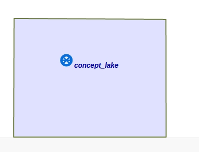

Команда проверки наличия overpass запроса у элементов в рамках заданной структуры
предназначена для проверки наличия overpass запроса у экземпляров элементов(абсолютных понятий) заданной структуры на наличие overpass запроса. Аргументом команды выступает структура, экземпляры элементов (абсолютных понятий) которых нужно проверить на наличие overpass запроса. Результатом выполнения запроса является структура, в которую входят элементы в у которых не ovrpass запроса:
